Unless noted otherwise, every result above uses uplo = "lower". Real workgroups dispatch in increasing index order, so uplo = "upper" front-loads the heaviest rows first (worse — long-running heavy workgroups have nothing to overlap with) while lower back-loads them (better — light rows clear fast, the heavy tail gets full GPU to itself) — collapsed below by default, expand a uplo value to see its table and chart.
Unless noted otherwise, every result above uses a tight lda (no padding). Padding the row stride changes throughput here — the exact mechanism and shape of that effect is routine-specific — collapsed below by default, expand a pad value to see its table and chart.
Padding on B, the operand the gemm kernels stream along their inner loop, so its stride is the one with most room to matter. Only for routines whose ldb sweep is a plain {pad, n} one — sgemm's is a combined transB x pad grid and has its own section.
alpha is a plain multiplier here: the kernel applies it unconditionally, with no branch for any particular value. A flat sweep is therefore the expected result and is recorded as a measured null. Levels include 0, 1 and a denormal-producing 1e-38 because those are the values a shader could special-case if it ever grew a branch — and strsm is the routine where one does.
beta scales the existing y/C before accumulation. Reference BLAS is permitted to skip reading that operand entirely when beta is 0, so unlike alpha this sweep has a mechanism to be non-flat — a step at 0 means the shortcut is taken, and its size is what it saves.
op(A) decides whether the kernel walks A along rows or columns, which changes how its tile loads coalesce. Swept on its own here; sgemm's combined transA x transB grid lives in its trans sweep.
Column-major swaps the effective m/n and flips the transpose flag internally, changing which axis is contiguous and therefore how the matrix reads coalesce. wgblas-only: cuBLAS is column-major and has no layout argument, so there is no reference curve to compare against.
Padding on the output matrix. C is written rather than streamed, so this measures write coalescing rather than read bandwidth — the row byte-stride is ldc*4, and a pad that moves it off the 128-byte boundary is what would show up here.
Benchmark results for sgemmtr on Nvidia Geforce Gtx 1650.
Nvidia Geforce Gtx 1650
See also
Uplo sweep
Unless noted otherwise, every result above uses
uplo = "lower". Real workgroups dispatch in increasing index order, souplo = "upper"front-loads the heaviest rows first (worse — long-running heavy workgroups have nothing to overlap with) whilelowerback-loads them (better — light rows clear fast, the heavy tail gets full GPU to itself) — collapsed below by default, expand auplovalue to see its table and chart.Nvidia Geforce Gtx 1650 — uplo = lower
Nvidia Geforce Gtx 1650 — uplo = upper
See also:
Lda sweep
Unless noted otherwise, every result above uses a tight
lda(no padding). Padding the row stride changes throughput here — the exact mechanism and shape of that effect is routine-specific — collapsed below by default, expand apadvalue to see its table and chart.Nvidia Geforce Gtx 1650 — pad = 0
Nvidia Geforce Gtx 1650 — pad = 1
Nvidia Geforce Gtx 1650 — pad = 8
Nvidia Geforce Gtx 1650 — pad = 16
Nvidia Geforce Gtx 1650 — pad = 32
Nvidia Geforce Gtx 1650 — pad = 48
Nvidia Geforce Gtx 1650 — pad = 64
Nvidia Geforce Gtx 1650 — pad = 128
See also:
ldb sweep
Padding on
B, the operand the gemm kernels stream along their inner loop, so its stride is the one with most room to matter. Only for routines whose ldb sweep is a plain {pad, n} one —sgemm's is a combined transB x pad grid and has its own section.Nvidia Geforce Gtx 1650 — ldb = n + 0
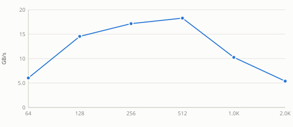
Nvidia Geforce Gtx 1650 — ldb = n + 1
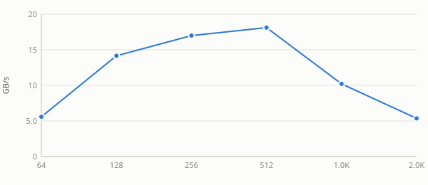
Nvidia Geforce Gtx 1650 — ldb = n + 8
Nvidia Geforce Gtx 1650 — ldb = n + 16
Nvidia Geforce Gtx 1650 — ldb = n + 32
Nvidia Geforce Gtx 1650 — ldb = n + 48
Nvidia Geforce Gtx 1650 — ldb = n + 64
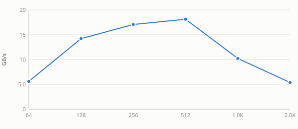
Nvidia Geforce Gtx 1650 — ldb = n + 128
See also:
alpha sweep
alphais a plain multiplier here: the kernel applies it unconditionally, with no branch for any particular value. A flat sweep is therefore the expected result and is recorded as a measured null. Levels include0,1and a denormal-producing1e-38because those are the values a shader could special-case if it ever grew a branch — andstrsmis the routine where one does.Nvidia Geforce Gtx 1650 — alpha = -3.75
Nvidia Geforce Gtx 1650 — alpha = 0
Nvidia Geforce Gtx 1650 — alpha = 1e-38
Nvidia Geforce Gtx 1650 — alpha = 1
Nvidia Geforce Gtx 1650 — alpha = 2.5
See also:
beta sweep
betascales the existingy/Cbefore accumulation. Reference BLAS is permitted to skip reading that operand entirely whenbetais 0, so unlikealphathis sweep has a mechanism to be non-flat — a step at 0 means the shortcut is taken, and its size is what it saves.Nvidia Geforce Gtx 1650 — beta = -3.75
Nvidia Geforce Gtx 1650 — beta = 0
Nvidia Geforce Gtx 1650 — beta = 1
Nvidia Geforce Gtx 1650 — beta = 2.5
See also:
transA sweep
op(A)decides whether the kernel walksAalong rows or columns, which changes how its tile loads coalesce. Swept on its own here;sgemm's combined transA x transB grid lives in its trans sweep.Nvidia Geforce Gtx 1650 — transA = no-transpose
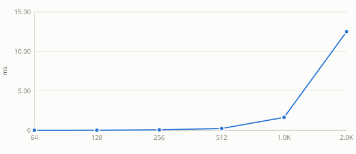
Nvidia Geforce Gtx 1650 — transA = transpose
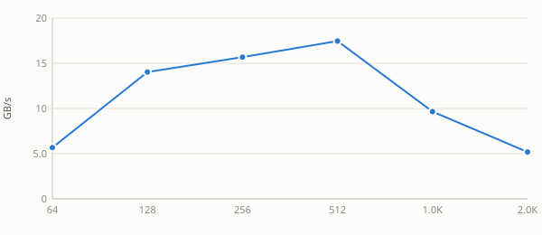
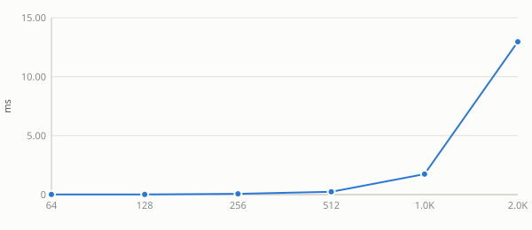
See also:
transB sweep
op(B)— the counterpart to the transA sweep, on the operand streamed along the kernel's inner loop, where a stride change has the most room to matter.Nvidia Geforce Gtx 1650 — transB = no-transpose
Nvidia Geforce Gtx 1650 — transB = transpose
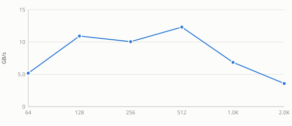
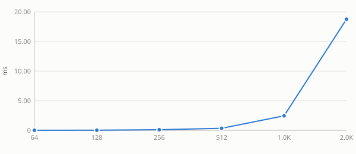
See also:
layout sweep
Column-major swaps the effective
m/nand flips the transpose flag internally, changing which axis is contiguous and therefore how the matrix reads coalesce. wgblas-only: cuBLAS is column-major and has no layout argument, so there is no reference curve to compare against.Nvidia Geforce Gtx 1650 — layout = column-major
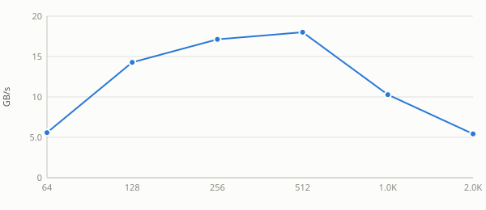
Nvidia Geforce Gtx 1650 — layout = row-major
See also:
ldc sweep
Padding on the output matrix.
Cis written rather than streamed, so this measures write coalescing rather than read bandwidth — the row byte-stride isldc*4, and a pad that moves it off the 128-byte boundary is what would show up here.Nvidia Geforce Gtx 1650 — ldc = n + 0
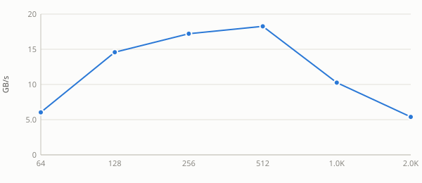
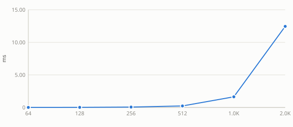
Nvidia Geforce Gtx 1650 — ldc = n + 1
Nvidia Geforce Gtx 1650 — ldc = n + 8
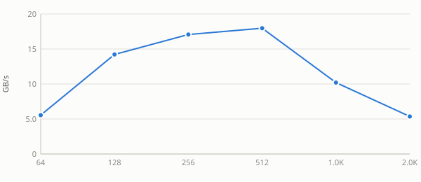
Nvidia Geforce Gtx 1650 — ldc = n + 16
Nvidia Geforce Gtx 1650 — ldc = n + 32
Nvidia Geforce Gtx 1650 — ldc = n + 48
Nvidia Geforce Gtx 1650 — ldc = n + 64
Nvidia Geforce Gtx 1650 — ldc = n + 128
See also: